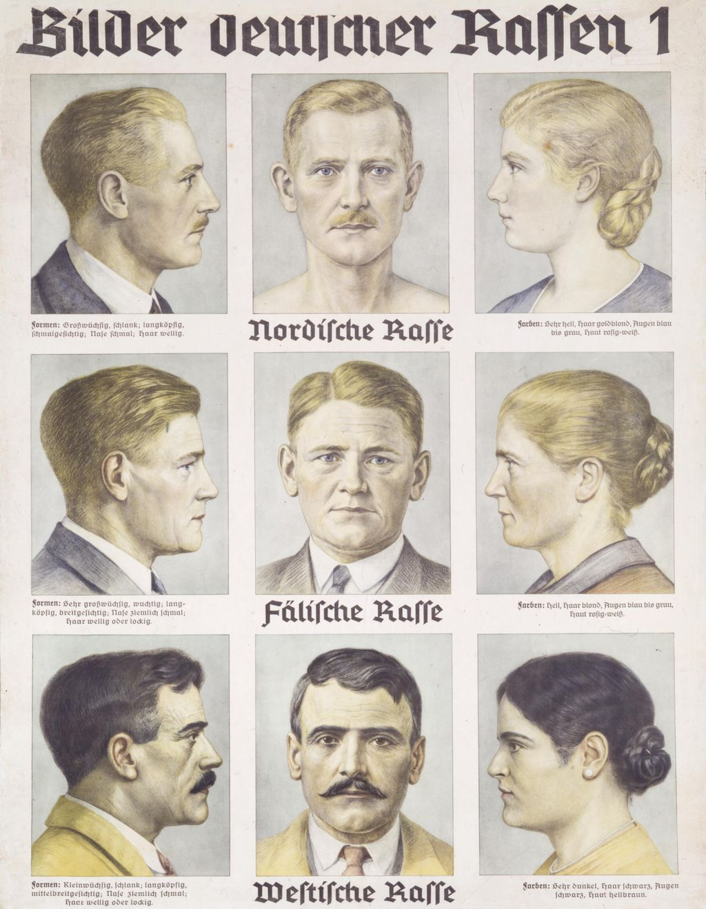

wie sie einem in Europa auf Schritt und Tritt, jedenfalls auf Leinwand oder Mattscheibe, begegnen.
|
Bob Dylan |
Harrison Ford |
Rosa Luxemburg |
dies sind israelische Künstler und Politiker, die in Europa weniger bekannt sind.
|
Hiam Abbass |
Lior Raz |
Shaul Mizrahi |
Lior Raz ist übrigens der Hauptdarsteller in der ungemein spannenden und wirklich sehenswerten israelischen Serie Fauda. Da spielt er einen Geheimpolizisten, der in den Gazastreifen eingeschleust wird, um Anschläge auf israelische Ziele zu vereiteln. Er ist ein aus dem Libanon eingewandert Jude. Er spricht Arabisch, sieht arabisch aus, kennt die Kultur, mag die Musik, lacht über arabische Witze. Mit einem Wort, die Palästinenser haben keine Chance ihn als Israeli und Juden zu erkennen.
Mein Problem ist nun, würde ich ihn auf der Straße in Berlin begegnen, hätte ich auch keine Chance ihn als Israeli und Juden zu erkennen. Ich würde rennen, glaubend er sei palästinensischer Araber und wolle mich verprügeln. Auf einer Straße in Tel Aviv erginge es mir nicht viel anders. Und genau da liegt mein Problem...